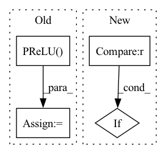

Pattern ID :7360
Before Change
self.use_res_connect = self.stride == 1 and in_channels == out_channels
self.inv_block = nn.Sequential(
nn.Conv2d(in_channels, in_channels * expand_ratio, 1, 1, 0, bias=False),
nn.BatchNorm2d(in_channels * expand_ratio),
nn.PReLU(),
nn.Conv2d(in_channels * expand_ratio, in_channels * expand_ratio, 3, stride, 1,
groups=in_channels * expand_ratio, bias=False),
nn.BatchNorm2d(in_channels * expand_ratio),
nn.PReLU() ,
nn.Conv2d(in_channels * expand_ratio, out_channels, 1, 1, 0, bias=False),
nn.BatchNorm2d(out_channels),After Change
self.use_res_connect = self.stride == 1 and inp == oup
layers = []
if expand_ratio != 1 :
// pw
layers.append(ConvBNReLU(inp, hidden_dim, kernel_size=1))
layers.extend([In pattern: SUPERPATTERN
Frequency: 3
Non-data size: 4
Instances Fragment ID: 24479221
Project Name: opendr-eu/opendr
Commit Name: 18da6a5d3ed5c2a291cb9c600a9fe4e5e17e5671
Time: 2021-01-26
Author: ptosidis@gmail.com
File Name: src/perception/face_recognition/algorithm/backbone/model_mobilenet.py
M Class Name: InvertedResidual
N Class Name: InvertedResidual
M Method Name: __init__(5)
N Method Name: __init__(6)
M Parent Class: nn.Module
N Parent Class: nn.Module
M File Name: src/perception/face_recognition/algorithm/backbone/model_mobilenet.py
N File Name: src/perception/face_recognition/algorithm/backbone/model_mobilenet.py
M Start Line: 111
M End Line: 131
N Start Line: 73
N End Line: 87
Before Change
self.galr = GALR(bottleneck_channels, hidden_channels, num_blocks=num_blocks, num_heads=num_heads, causal=causal, norm=norm)
self.overlap_add1d = OverlapAdd1d(chunk_size, hop_size)
self.prelu = nn.PReLU()
self.mask_conv1d = nn.Conv1d(bottleneck_channels, n_sources*num_features, kernel_size=1, stride=1)
if mask_nonlinear == "sigmoid":
self.mask_nonlinear = nn.Sigmoid()After Change
self.overlap_add1d = OverlapAdd1d(chunk_size, hop_size)
self.gtu = GTU1d(bottleneck_channels, n_sources*num_features)
if mask_nonlinear == "relu" :
self.mask_nonlinear = nn.ReLU()
elif mask_nonlinear == "sigmoid":
self.mask_nonlinear = nn.Sigmoid() Fragment ID: 24479220
Project Name: tky823/dnn-based_source_separation
Commit Name: 05389d5b113323e5f319e33ad907ca48bbf85967
Time: 2021-02-06
Author: 40362510+tky823@users.noreply.github.com
File Name: src/models/galrnet.py
M Class Name: Separator
N Class Name: Separator
M Method Name: __init__(13)
N Method Name: __init__(13)
M Parent Class: nn.Module
N Parent Class: nn.Module
M File Name: src/models/galrnet.py
N File Name: src/models/galrnet.py
M Start Line: 110
M End Line: 127
N Start Line: 113
N End Line: 127
Before Change
def __call__(self, input, weight):
prelu = P.PReLU()
v = prelu(input, F.cast(weight, input.dtype))
return v
After Change
if self.data_format == "channels_last" :
input = nhwc_to_nchw(input)
v = self.prelu(input, F.cast(weight, input.dtype))
if self.data_format == "channels_last" :
v = nchw_to_nhwc(v)
return v
Fragment ID: 24479217
Project Name: tensorlayer/tensorlayerx
Commit Name: d077c1b2c9439e9065952817a66c2cc7e7bf1667
Time: 2022-11-11
Author: jiaronghan@outlook.com
File Name: tensorlayerx/backend/ops/mindspore_nn.py
M Class Name: PReLU
N Class Name: PReLU
M Method Name: __call__(3)
N Method Name: __call__(3)
M Parent Class: Cell
N Parent Class: Cell
M File Name: tensorlayerx/backend/ops/mindspore_nn.py
N File Name: tensorlayerx/backend/ops/mindspore_nn.py
M Start Line: 2491
M End Line: 2491
N Start Line: 2491
N End Line: 2496